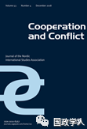

收录于合集 #理论研究 96个

简 介
【 作者 】
尼克拉斯·尼尔松（Niklas Nilsson），瑞典国防大学军事研究系战争研究助理教授。他目前的研究重点是东欧和后苏联国家的外交和安全政策，以及不对称战争和军事战术。
【 编译 】杨艺华
【 校对 】李源
【 来源 】
Cooperation and Conflict ， November 3, 2018

Cooperation and Conflict ，是一份致力于发表高质量文章的同行评议期刊，其文章研究主题广泛但重点关注北欧和欧洲事务，反映了当代斯堪的那维亚半岛国际关系研究的活力和多样性。
核心观点
本文探讨了国家角色概念作为危机中对外决策参考点的范围条件，使人们能够更了解新独立国家与重要他者关系的社会化进程。在对包含格鲁吉亚和美国官员的采访等材料进行分析的基础上，本文分析了在2007年国内骚乱和2008年俄格战争两次危机中，格鲁吉亚的角色概念在格鲁吉亚与美国关系中的重要性。作者假设，危机提供了一个环境，在这个环境中国家不能根据自己的角色概念去行动。为了解决随之而来的角色冲突，行动者既需要使角色期望“合理化”，又需要对偏离角色期望的行为进行“补偿”。这些战略关系到角色概念的变化和稳定，进而会影响外交政策。对格鲁吉亚的案例进行分析后，作者发现格鲁吉亚在两次危机都使用了合理化和补偿的战略，目的是为了保持美国眼中其角色概念的可信度。
文章导读
一、理论框架
首先，作者假设危机为探索角色和行为之间的关系提供了特别有用的经验焦点，认为危机构成了对决策者角色概念的挑战。
作者认为，危机由以下三点构成：第一，危机对既定价值形成了挑战且相关决策者已经察觉到了这种挑战的出现；第二，危机的性质和结果具有不确定性，致使决策者往往对其的了解很少，即信息不足；第三，危机留给决策者应对的时间很少。 所以，危机的特点决定了决策者要在信息不足的情况下进行快速决策，使得决策者可能来不及考虑角色概念中他者的期望，甚至做出一些在正常情况下不可能做的决策，影响了决策者角色扮演的范围。
而危机对决策者角色概念的影响程度如何，则和危机框架有关。 决策者和反对者分别向民众提供关于危机的原因、影响和政治含义的有信服力的解释，进而中和成了危机的政治影响。其中，决策者参与了危机的意义构建。如果决策者将危机定义为一场外生于现存体系的威胁，就有利于维护现存体系；如果决策者将危机定义为一场内生于现存体系的威胁，就会暴露现存体系的缺点进而导致现存体系的改变。 所以，危机框架的塑造决定了角色概念是会更加巩固、变得适应环境还是发生根本性改变，而角色概念在塑造危机框架中具有重要作用。 角色概念包含了对现实的熟悉的和共享的解释，能够为危机提供主体间理解。
其次，作者认为危机之所以能构成对角色概念的挑战，其前提条件是：危机需要决策者做出与其角色概念不符的行动，即要求决策者在满足环境的要求与根据现在自己的角色概念去做出合适的行为之间进行抉择。 而角色永远不可能只存在于行动者层面的分析中，它们是通过行动者与重要他者的互动而产生和再现的，所以不符合他者的角色期望的行为将挑战现有角色在既定社会关系中的持续相关性。 所以，决策者放弃角色概念的可能性很小，而决策者更有可能通过改变他者对角色的期望或者调整自己的行为来重建现有角色的稳定性。 也就是说，解决环境与角色概念之间矛盾的方法有两种：调整调整他者对角色的期望，或者改进角色扮演。 作者把前一种解决角色冲突的战略称之为 “ 合理化 ” （ rationalization ） , 而把后一种称为 “ 补偿 ” （ compensation ）。合理化意味着使角色适应新的情况，它并不要求在角色的目的或角色对自我理解的影响这两方面有更深层次的改变，而是要求在扮演角色时重新定义可接受的手段。补偿意味着行为上的改变，采取的行动更符合角色期望，从而更有效地扮演角色。
当然，合理化和补偿可以同时进行。例如，行为体可能会试图使他者对某个角色的部分期望合理化，同时通过其他方式补偿与这些期望的背离。 但是，作者假设决策者在危机的不同时间点使用不同的战略， 而如何使用则取决于危机的类型。 在危机的最严重阶段（即需要决策者做出快速反应的时候），使用 “ 合理化 ” 战略似乎更好，因为这能增大决策者的回旋空间并减轻决策者的外部压力。相反，在最严重阶段过后，补偿可能会成为一种更重要的策略，因为它是一种能够处理危机管理过程中可能出现的违规行为的手段。 如果决策者可以预知到危机，他可以提前将危机的原因描述为外生于现存体系，来为使用“合理化”战略做准备。但是，如果危机的原因被证明是内生于现存体系，决策者就不得不使用“补偿”战略来重新获得角色概念的可信度。而决策者所使用的战略和重要他者对这些战略的反应不仅影响决策者在扮演被影响的角色概念时的回旋空间，而且会影响决策者在解决之后危机时选择的多与少。
二、案例研究
2003 年 11 月 “ 玫瑰革命 ”(Rose Revolution) 后，新上台的萨卡什维利 (Mikheil Sakashvili) 政府制定了明确的亲西方外交政策，其中包括格鲁吉亚在与西方伙伴关系中扮演的两个特殊外交角色。首先，他们希望格鲁吉亚能成为 “ 自由的灯塔 ” （ beacon of liberty ），因为格鲁吉亚是后苏联地区中除波罗的海国家外最民主的国家。其次，他们认为格鲁吉亚是欧洲 - 大西洋安全共同体的 “ 安全贡献者 ” （ net-security contributor ）。
这两个角色概念很大程度上借鉴了911后美国对外政策话语，特别是布什主义和自由议程。格鲁吉亚利用了美国对未来盟友的角色期望来建构自己的角色，以维持美国对格鲁吉亚政府国内外政治议程的支持。但是，这两个角色概念从一开始就存在内部矛盾性，并引发了以下危机。
（一） 作为 “ 自由的灯塔 ” 的格鲁吉亚和 2007 年 11 月的危机
2007年11月7日，格鲁吉亚警方驱散了议会外的反对派抗议活动，引发冲突，吸引了越来越多的反对派支持者。格鲁吉亚当局的回应是动用防暴警察镇压抗议活动，并宣布了为期一周的紧急状态。暴乱发生后，萨卡什维利立即为这场危机提供了一个外生的框架，认为政府避免了一场由俄罗斯特务机构煽动的对格鲁吉亚国家的严重威胁，并且政府所采取的措施完全符合欧洲民主国家通常采取的措施。
11月7日的行动明显背离了格鲁吉亚的“自由的灯塔”这一角色概念，招致了欧盟、北约尤其是美国的批评。 为此，格鲁吉亚政府采取了双重战略，既使人们对 “ 自由的灯塔 ” 这一角色概念的期望合理化，又对危机期间采取的行动作出补偿。
第一，格鲁吉亚政府试图修改自己对格鲁吉亚作为 “ 自由的灯塔 ” 的定义，以便为不符合其角色扮演的行动留出更多的空间。 在这些事件之后，萨卡什维利政府的官方措辞有了明显的转变。在2007年11月之前的国际活动中，萨卡什维利经常将玫瑰革命后的格鲁吉亚描绘成一个成熟的欧洲民主国家，认为格鲁吉亚必须以身作则来帮助推进世界其他国家的和平愿望。在2007年11月的事件及随后的总统选举之后，萨卡什维利将格鲁吉亚描述为一个正在转型的国家。
其次，格鲁吉亚政府迅速采取行动以对危机期间作出的决定进行补偿，其中最重要的是萨卡什维利决定辞职并争取连任。 萨卡什维利说，他需要格鲁吉亚公众重新授权，继续他的政府已经开始的改革。格鲁吉亚受访者称，这场危机是对格鲁吉亚民主化进程的一次关键考验，萨卡什维利的辞职表明格鲁吉亚将通过找到一种民主的方式来应对政治危机来继续坚持民主原则，这实际上表明格鲁吉亚不再是一个后苏联国家。
然而，此举也是对格鲁吉亚国际伙伴的一个重要姿态，尤其是为了挽救美国的支持。在2008年4月，北约将召开布加勒斯特峰会，格鲁吉亚政府希望加入成员国资格行动计划，这一目标要求美国付出相当大的外交努力以说服持怀疑态度的西欧盟友。11月的镇压行动大大降低了布什政府在这方面支持格鲁吉亚的热情，正是萨卡什维利争取连任的行动和在2008年1月对美国访问中表现出的走向西方的决心，使得布什总统最终支持了格鲁吉亚。
（二） 作为 “ 安全贡献者 ” 的格鲁吉亚及 2008 年 8 月的战争
2008年8月7日，格鲁吉亚军队对南奥塞梯首府茨欣瓦利发动进攻，原因是南奥塞梯民兵不断向格鲁吉亚阵地开火以及为了阻止俄军挺进格鲁吉亚。然而，格鲁吉亚入侵南奥塞梯为俄罗斯全面入侵格鲁吉亚提供了借口，进而导致这两个地区的永久性损失和俄罗斯军队在格鲁吉亚领土的驻扎。
美国认为，虽然是俄罗斯刺激了格鲁吉亚发动攻击，但格鲁吉亚不顾美国的建议而与俄罗斯展开军事对抗这一事实导致美国政策制定者对格鲁吉亚领导层的幻想破灭。8月的战争也突出了美国继续支持格鲁吉亚加入北约的风险，特别是为较小的盟国提供安全保障可能会把美国拖入地区冲突。因此， 战争严重损害了格鲁吉亚作为 “ 安全贡献者 ” 的信誉，以及它获得北约成员资格的机会。
战后，格鲁吉亚政府再次选择了合理化和补偿的双重战略，以减轻危机的影响。 格鲁吉亚政府断言，俄罗斯军队被转移到了南奥塞梯以准备入侵格鲁吉亚，证明了格鲁吉亚的攻击是一个外生危机。 格鲁吉亚政府认为，和平解决冲突和避免与俄罗斯发生冲突的期望从根本上是不公平的，格鲁吉亚不能只是克制。相反，它扮演安全贡献者的角色，这意味着为西方对格鲁吉亚应有更多的安全保障。
补偿也是格鲁吉亚政府反应的一个明显特点。在战争结束后的几个月里，格鲁吉亚采取了若干行动，以恢复美国对其作为安全贡献者的信心。 例如，它再次承诺不将武力作为统一分离地区的主要手段。例如，2009年初格鲁吉亚政府宣布向驻阿富汗的国际安全援助部队(International Security Assistance Force, ISAF)派遣大量部队。 然而，格鲁吉亚政府对战争最直接的补偿是强调格鲁吉亚的民主化及其 “ 自由的灯塔 ” 的角色。 例如，萨卡什维利2008年9月在联合国大会上发言时声称，俄罗斯攻击格鲁吉亚正是因为它是一个民主国家，格鲁吉亚将通过深化民主和实施“第二次玫瑰革命”来抗击俄罗斯的侵略，革命的结果将对“国际秩序的健康”至关重要。
格鲁吉亚所做的这些努力，似乎在布什政府及其继任者奥巴马政府对格鲁吉亚保持相当大程度的支持方面起到了决定性作用。战后，美国优先考虑维持停火协议，支持格鲁吉亚减轻战争带来的经济后果以防止国家崩溃，美国价值10亿美元的一揽子援助计划很快成为现实。
三、 结论
本文论证了危机作为外交决策中角色冲突管理研究的焦点的重要性。
在这两次危机的最严重阶段，即当格鲁吉亚政府认为局势威胁到国家的完整以及统治精英对权力的控制时，它准备放弃以前所作的承诺并采取与外部角色期望相冲突的措施。然而在其角色冲突带来后果，特别是在收到美国不满的信号时，政府将角色概念作为危机的意义构建和采取行动的参考点。因此，格鲁吉亚政府开始维持其与美国关系中的角色概念。于是，格鲁吉亚政府使用了合理化和补偿的双重战略，使得角色概念适应了新情况并将角色概念保留为对外政策的一部分。
尽管合理化和补偿在这两次危机管理中都存在，但在2007年11月的危机中合理化的空间似乎比2008年的战争中的小得多，这与格鲁吉亚政府定义两次危机的内生或外生危机框架的能力有关。2007年11月镇压事件发生后不久，格鲁吉亚政府就敏锐地意识到这一事件的国际影响以及将其原因描述为外部煽动的困难性。因此，补偿行动来得很快，并构成了对危机所引发的角色冲突的主要反应。相比之下，格鲁吉亚更容易将2008年的战争归因于邻国的外部侵略。在这种情况下，立即的反应主要集中于使美国的期望合理化，而主要的补偿行动包括强调格鲁吉亚对民主的承诺，这既是俄罗斯侵略的原因也是对俄罗斯侵略的反应。
这两次危机是在很短的时间内发生的，这影响了格鲁吉亚政府的反应。2007年11月的危机表明了美国的角色期望，所以2008年的战争不仅对格鲁吉亚对欧洲—大西洋安全共同体做贡献的能力是一个至关重要的测试，而且也对格鲁吉亚如何证明其在面对外部压力时会继续致力于民主行为提出了要求。因此，第一次危机的经验可能加强了格鲁吉亚战后强调“自由灯塔”作用的必要性。
这些结论与以往外交政策角色理论和国际社会化研究的观点并不矛盾。事实上，格鲁吉亚和美国在权力和物质资源上的差距能够解释格鲁吉亚政府对美国社会化的反应、它对美国的认同以及它为什么想成为西方的一部分。同样，格鲁吉亚对角色方面的表现和它对其角色概念的似乎有限的内化，都是由于它在国际体系中的新手地位以及它在诸如欧盟或北约等国际组织中缺乏伙伴所导致的。然而，本文提供的危机视角以及将合理化和补偿作为解决角色冲突策略的观点，强调了社会化进程中环境的重要性。此外，个案研究突出了对新独立国家的社会化进程进行研究的重要性。事实上，格鲁吉亚政府对美国的角色期望不只是简单地接受，而是根据自己的角色概念及必要性来塑造这些期望从而拥有影响进程的能力。这是未来国际社会化研究中值得更多关注的一个观点。
点击“ 阅读原文”获取原文pdf版
更多阅读
国政学人 （ID：guozhengxueren)
为方便学人及时阅读高质量文章
别忘把国政学人设置 星标 哦~